Kláštor Redemptoristov Podolínec
 Narodenie Stanislava Ľubomirskeho
Narodenie Stanislava Ľubomirskeho (1583-1649)
 Zakladacia listina
Zakladacia listina(november 1642, Krakov)
 Prví piaristi v Podolínci
Prví piaristi v Podolínci (december 1642)
 Začiatok stavebných prác
Začiatok stavebných prác (1643)
 Piaristi v nových priestoroch
Piaristi v nových priestoroch (1648)
 Posvätenie kostola sv. Stanislava
Posvätenie kostola sv. Stanislava (1671)
 Stavebné úpravy kostola
Stavebné úpravy kostola (1762)
 Piaristi odchádzajú z Podolínca
Piaristi odchádzajú z Podolínca (30. august 1919)
 Redemptoristi v Podolínci
Redemptoristi v Podolínci(23. máj 1922)
 Odchod redemptoristov z Podolínca
Odchod redemptoristov z Podolínca(28. apríl 1927)
 Návrat redemptoristov do Podolínca
Návrat redemptoristov do Podolínca (september 1940)
 Akcia K - Barbarská noc
Akcia K - Barbarská noc (z 13. na 14. apríla 1950)
 Zrušenie centralizačného tábora
Zrušenie centralizačného tábora (december 1951)
 Charitný domov
Charitný domov (august 1956)
 Sestry opúšťajú kláštor,
Sestry opúšťajú kláštor, ktorý sa stáva štátnou školou
(december 1961)
 Redemptoristi opäť v Podolínci
Redemptoristi opäť v Podolínci (28. január 1990)
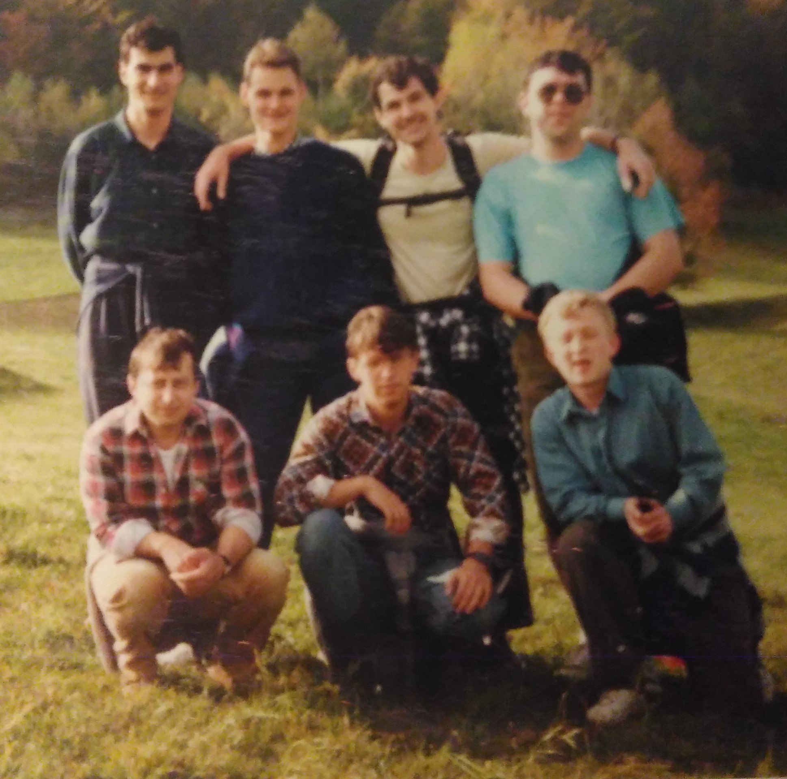
Prvý noviciát
(1993)
(1993)
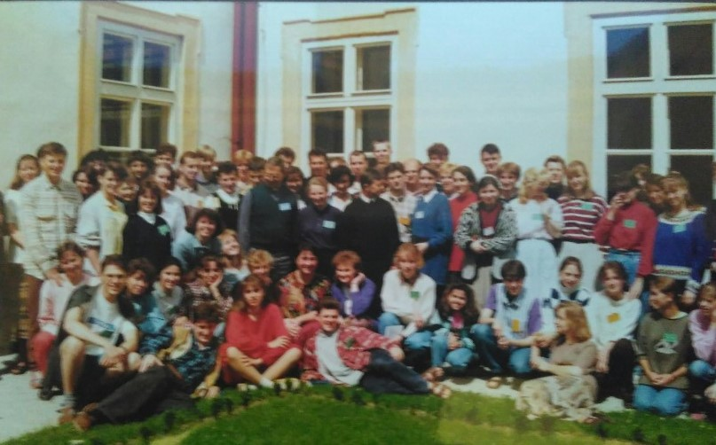
Spoločensvo Rieka života
(1996)
(1996)
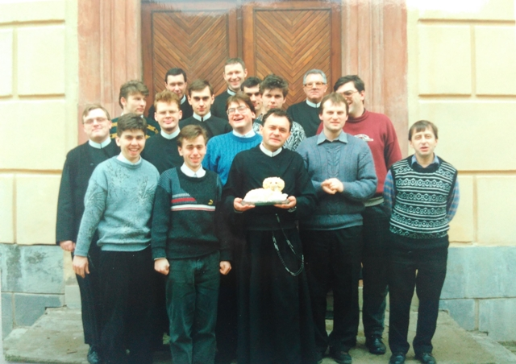
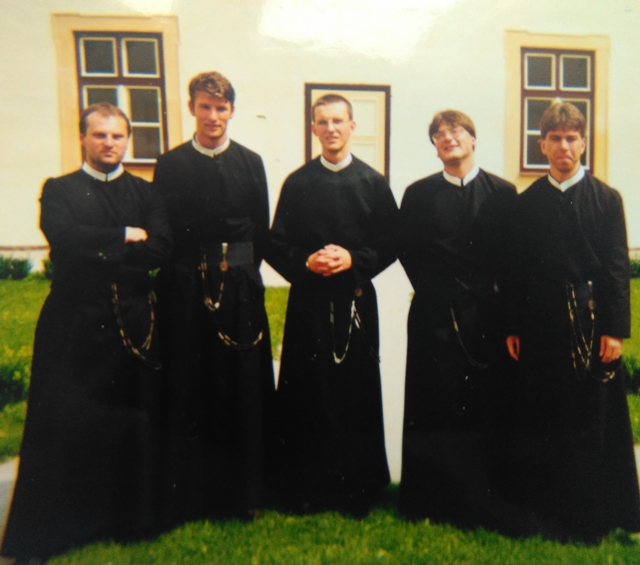
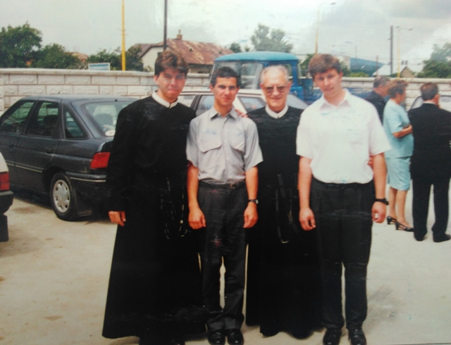
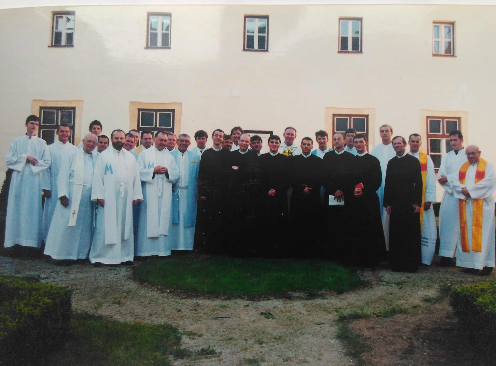
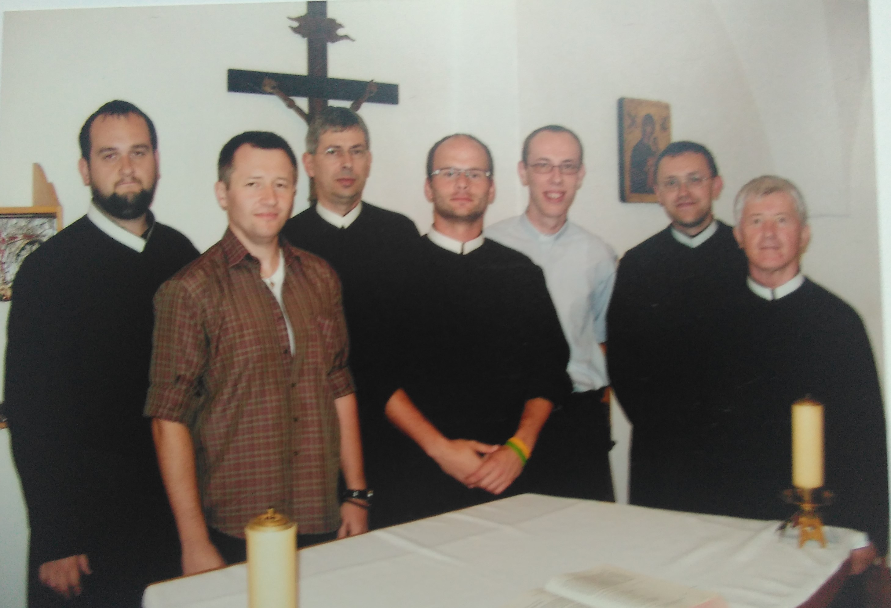
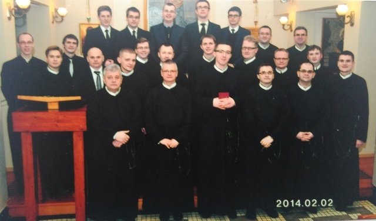
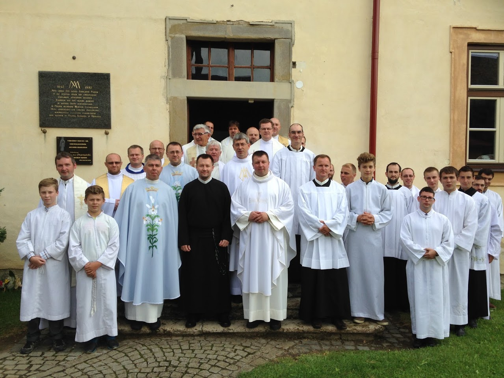
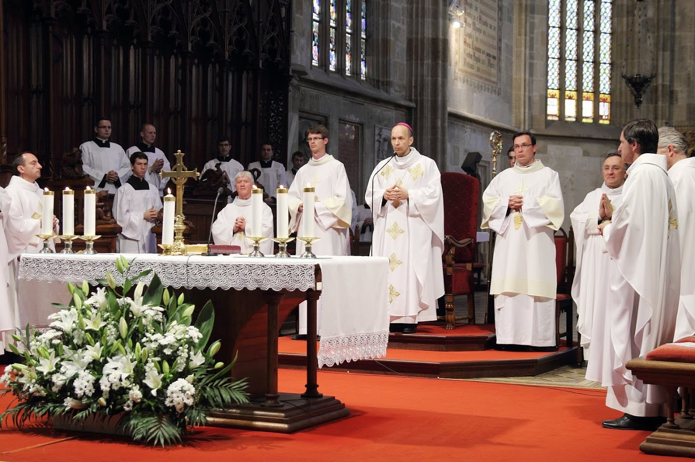
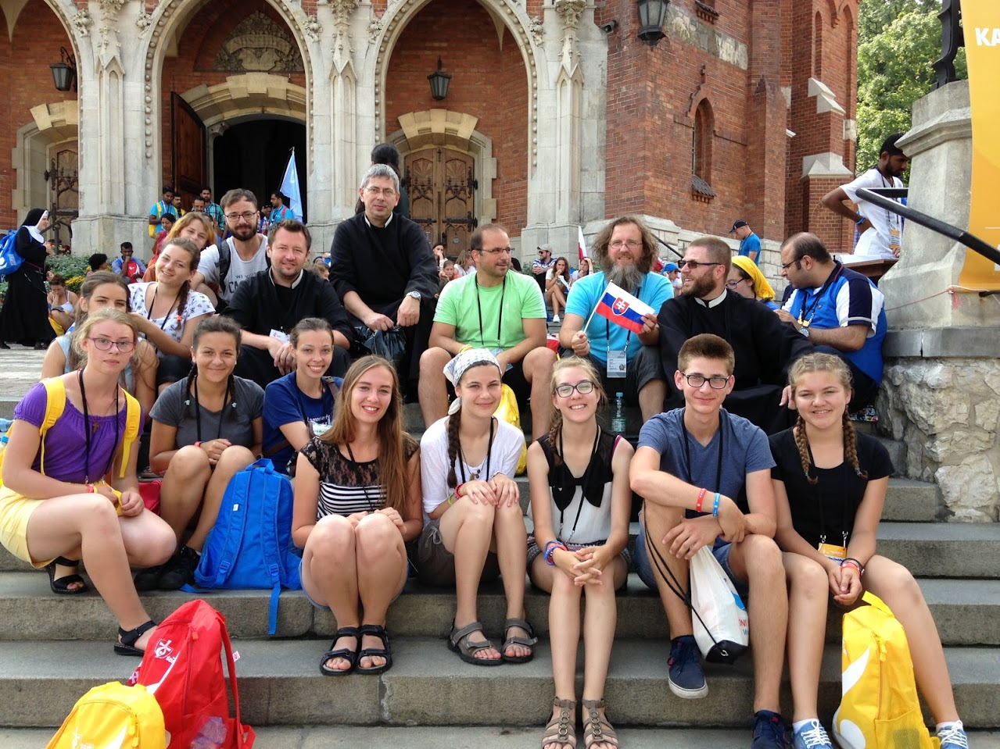
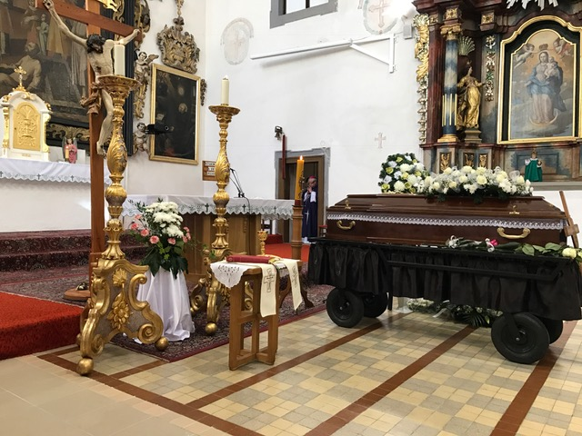
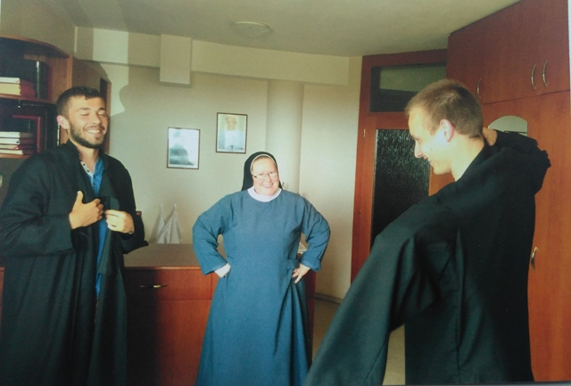
1
2
3
4
5
6
7
8
9
10
11
Program Bohoslužieb
| Deň | Letný čas | Zimný čas |
|---|---|---|
| Pondelok | 6:30 | 6:30 |
| Utorok | 6:30 | 6:30 |
| Streda | 6:30 | 6:30 |
| Štvrtok | 6:30 | 6:30 |
| Piatok | 6:30 | 6:30 |
| Sobota | 6:15* | 6:15* |
| Nedeľa | 6:30 | 6:30 |
| 18:30 | 18:30 |
Adorácia
| Štvrtok | 19:15 | 18:15 |
Sviatosť zmierenia
Možno prijať v nedeľu počas svätých omší a v týždni pred svätými omšami alebo na požiadanie.
* - V sobotu je svätá omša po novene k Matke ustavičnej pomoci.
052/439 12 54
klastorpodolinec@gmail.com